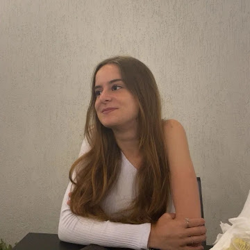

Estudante de Ciência da Computação
Email:
luisadelfinoreis@gmail.com
Telefone:
(35) 99152-0231
Localização:
Belo Horizonte/MG
linkedin.com/in/luisa-reis-373270316
Cibersegurança
Redes de Computadores
Segurança de Redes
Linux
SQL
Linguagem C
Lógica de Programação
Gestão de Riscos
CIS Controls
Fundamentos de Dados
Inteligência Artificial
Comunicação
Trabalho em equipe
Organização
Responsabilidade
Colaboração
Proatividade
Empatia
Facilidade para aprender
Estudante de Ciência da Computação | Cibersegurança | Segurança da Informação | Redes | Linux | SQL
Estágio ou primeira oportunidade profissional em Tecnologia da Informação, com interesse em Cibersegurança, Segurança da Informação, Redes, Suporte Técnico, Infraestrutura de TI ou Desenvolvimento.
Estudante de Ciência da Computação na PUC Minas, em desenvolvimento na área de tecnologia e com foco em estudos de Cibersegurança, Segurança da Informação, Redes, Linux, SQL e Programação.
Possui certificações em segurança cibernética, gestão de riscos, CIS Controls, redes de computadores, dispositivos de rede, Linux, SQL, linguagem C e fundamentos de dados.
Perfil comunicativo, responsável e colaborativo, com facilidade para trabalhar em equipe, interesse por voluntariado e vontade constante de aprender e aplicar conhecimentos em situações práticas.
Cursando | Belo Horizonte/MG
Participação em atividade voluntária com foco em colaboração, apoio social e interação com pessoas, desenvolvendo comunicação, responsabilidade, empatia, trabalho em equipe e compromisso com iniciativas de impacto positivo.